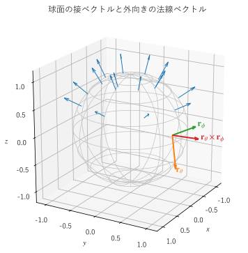

第 12 章 面積分と流束
曲面の上で場を積分するのが面積分である。この章では、曲面をパラメーター表示し、法線ベクトルと面素を求める方法を説明する。それを使って、曲面の面積、スカラー場の面積分、そしてベクトル場が曲面を通り抜ける量である流束を計算する。流束は、第 14 章のガウスの発散定理と第 15 章のストークスの定理の主役になる。
曲面のパラメーター表示
曲線を 1 つのパラメーター \(t\) で表したように、曲面は 2 つのパラメーター \((u, v)\) で表せる。
\((u, v)\) が平面の領域 \(D\) を動くと、点 \(\bm{r}(u, v)\) は空間の曲面 \(S\) を描く。代表的な曲面のパラメーター表示を示す。
曲面 |
パラメーター表示 |
パラメーターの範囲 |
|---|---|---|
平面 |
\(\bm{r}(u, v) = \bm{r}_0 + u \bm{a} + v \bm{b}\) |
\(D\) は平面の領域 |
円柱面（半径 \(R\)） |
\(\bm{r}(\phi, z) = (R\cos\phi, \ R\sin\phi, \ z)\) |
\(0 \le \phi < 2\pi\) |
球面（半径 \(R\)） |
\(\bm{r}(\theta, \phi) = (R\sin\theta\cos\phi, \ R\sin\theta\sin\phi, \ R\cos\theta)\) |
\(0 \le \theta \le \pi, \ 0 \le \phi < 2\pi\) |
グラフ \(z = g(x, y)\) |
\(\bm{r}(x, y) = (x, \ y, \ g(x, y))\) |
\((x, y) \in D\) |
平面のパラメーター表示の \(\bm{a}\), \(\bm{b}\) は、平面に平行で互いに平行でない 2 つのベクトルである。円柱面と球面は、第 9 章の円柱座標と球座標で \(\rho = R\)、\(r = R\) と固定したものである。
\(v\) を固定して \(u\) だけを動かすと、曲面上に 1 本の曲線ができる。\(u\) を固定した場合も同様である。これらの曲線を座標曲線という。球面では、\(\theta\) が一定の曲線が緯線、\(\phi\) が一定の曲線が経線である。
法線ベクトルと面素
接ベクトルと法線ベクトル
座標曲線の接ベクトルは、偏微分
で与えられる。2 つの接ベクトルはどちらも曲面に接しているので、その外積 \(\bm{r}_u \times \bm{r}_v\) は曲面に垂直な法線ベクトルになる（第 2 章）。大きさで割ったものが単位法線ベクトルである。
ここでは、\(\bm{r}_u \times \bm{r}_v \ne \bm{0}\)（2 つの接ベクトルが平行にならない）と仮定する。このような点では、曲面に滑らかな接平面がある。
面素
パラメーターの小さな長方形（辺 \(du\), \(dv\)）は、曲面上では 2 つのベクトル \(\bm{r}_u \, du\) と \(\bm{r}_v \, dv\) が張る小さな平行四辺形になる。平行四辺形の面積は外積の大きさなので、曲面の面素は
である。第 10 章の変数変換で現れたヤコビアンの絶対値は、平面から平面への変換での同じ量であった。面素に単位法線ベクトルを掛けた
をベクトル面素という。大きさが面積、向きが曲面に垂直なベクトルである。
代表的な曲面の面素
球面：\(\bm{r}_\theta = R(\cos\theta\cos\phi, \cos\theta\sin\phi, -\sin\theta)\)、\(\bm{r}_\phi = R(-\sin\theta\sin\phi, \sin\theta\cos\phi, 0)\) から
\[\bm{r}_\theta \times \bm{r}_\phi = R^2 \sin\theta \, \bm{e}_r, \qquad dS = R^2 \sin\theta \, d\theta \, d\phi\]となる。法線ベクトルは外向き（\(\bm{e}_r\) の向き）である（図 17）。面素は第 9 章で求めたものと一致する。
円柱面：\(\bm{r}_\phi = (-R\sin\phi, R\cos\phi, 0)\)、\(\bm{r}_z = (0, 0, 1)\) から \(\bm{r}_\phi \times \bm{r}_z = R \, \bm{e}_\rho\)、\(dS = R \, d\phi \, dz\) となる。法線ベクトルは外向きである。
グラフ \(z = g(x, y)\)：\(\bm{r}_x = (1, 0, g_x)\)、\(\bm{r}_y = (0, 1, g_y)\) から
\[\bm{r}_x \times \bm{r}_y = (-g_x, \ -g_y, \ 1), \qquad dS = \sqrt{1 + g_x^2 + g_y^2} \, dx \, dy\]となる。\(g_x = \partial g / \partial x\) などである。法線ベクトルは上向き（\(z\) 成分が正）である。\(\sqrt{1 + g_x^2 + g_y^2}\) は、傾いた曲面の面積が、\(xy\) 平面に射影した面積の何倍かを表している。


図 17 球面の接ベクトル \(\bm{r}_\theta\), \(\bm{r}_\phi\) と外向きの法線ベクトル
21def tangents(theta: float, phi: float, radius: float = 1.0) -> tuple[Vec, Vec]:
22 """接ベクトル r_θ = ∂r/∂θ と r_φ = ∂r/∂φ を返す."""
23 r_theta = radius * np.array([np.cos(theta) * np.cos(phi), np.cos(theta) * np.sin(phi), -np.sin(theta)])
24 r_phi = radius * np.array([-np.sin(theta) * np.sin(phi), np.sin(theta) * np.cos(phi), 0.0])
25 return r_theta, r_phi
サンプルの全体：ch12_sphere_normals.py
曲面の向き
1 つの曲面には、法線ベクトルの向きが 2 通りある。たとえば球面には外向きと内向きがある。曲面の各点で、連続的に変わるように法線ベクトルの向きを 1 つ選ぶことを、曲面の向きを決めるという。向きを決めた曲面を、向きの付いた曲面という。
パラメーター表示した曲面では、\(\bm{r}_u \times \bm{r}_v\) の向きが 1 つの向きを与える。\(u\) と \(v\) を入れ替えると、向きは逆になる。
球面や立方体の表面のように、空間のある領域を囲む曲面を閉曲面という。閉曲面では、特に断らない限り、外向きの法線ベクトルを正の向きとする。
ほとんどの曲面は向きを決められるが、例外もある。細長い帯を 1 回ひねって両端を貼り合わせたメビウスの帯は、法線ベクトルを連続的に動かして 1 周すると、元と逆の向きに戻ってしまう。このような曲面では向きを決められず、流束を定義できない。本書では向きを決められる曲面だけを扱う。
曲面積とスカラー場の面積分
定義
スカラー場 \(f\) の曲面 \(S\) 上の面積分は、曲面を小さく分けて「\(f\) の値 × 面積」を足し合わせた和の極限であり、パラメーター表示を使って次のように計算できる。
\(f = 1\) なら曲面の面積になる。\(f\) が曲面の面密度なら、曲面の形をした薄い殻の質量になる。スカラー場の面積分は、曲面の向きにもパラメーター表示の選び方にもよらない。
例：球面と放物面の面積
半径 \(R\) の球面の面積は
である。
放物面 \(z = x^2 + y^2\) の \(z \le 1\) の部分の面積を求める。グラフの公式から \(dS = \sqrt{1 + 4x^2 + 4y^2} \, dx \, dy\) で、\(xy\) 平面上の領域は単位円板である。極座標に変換すると
となる。底面の円板の面積 \(\pi \approx 3.14\) より大きいのは、曲面が傾いているからである。
例：半球面の殻の質量
半径 \(R\) の半球面 \(z \ge 0\) の面密度が高さに比例して \(z\) であるとき、質量は
となる。
流束
流れが曲面を通り抜ける量
速度 \(\bm{v}\) の流れの中に、面積 \(\Delta S\)、単位法線ベクトル \(\bm{n}\) の小さな面を置く。第 6 章で見たように、時間 \(\Delta t\) の間にこの面を通り抜ける流体は、底面が \(\Delta S\)、側面が \(\bm{v} \Delta t\) に平行な斜めの柱をなす。柱の高さは \(\bm{v} \Delta t\) の \(\bm{n}\) 方向の成分 \((\bm{v} \cdot \bm{n}) \Delta t\) なので、通り抜ける体積は \((\bm{v} \cdot \bm{n}) \Delta S \, \Delta t\) である。単位時間あたりでは \((\bm{v} \cdot \bm{n}) \Delta S\) となる。
流れが面に垂直なら \(\bm{v} \cdot \bm{n} = |\bm{v}|\) で、通り抜ける量は最大である。
流れが面に平行なら \(\bm{v} \cdot \bm{n} = 0\) で、何も通り抜けない。
流れが \(\bm{n}\) と逆向きなら負になり、逆向きに通り抜けることを表す。
曲面全体で足し合わせたものを、ベクトル場 \(\bm{F}\) の曲面 \(S\) を通る流束という。
流束は、法線方向の成分 \(\bm{F} \cdot \bm{n}\) をスカラー場として面積分したものである。曲面の向きを逆にすると符号が変わる。この点は、ベクトル場の線積分が曲線の向きで符号を変えたこと（第 11 章）と同じである。
流束という言葉は、流れ以外のベクトル場にも使う。電場 \(\bm{E}\) の流束は電束、磁束密度 \(\bm{B}\) の流束は磁束、熱流束ベクトルの流束は単位時間に曲面を通る熱量である。
例：位置ベクトル場の流束
\(\bm{F} = \bm{r} = (x, y, z)\) の、半径 \(R\) の球面を外向きに通る流束を求める。球面上では \(\bm{n} = \bm{e}_r\)、\(\bm{r} = R \bm{e}_r\) なので \(\bm{F} \cdot \bm{n} = R\) は一定であり、
となる。同じ場の、半径 \(R\)、高さ \(h\) の円柱の側面を外向きに通る流束は、側面で \(\bm{F} \cdot \bm{n} = R\) なので \(R \times 2\pi R h = 2\pi R^2 h\) である。このように、\(\bm{F} \cdot \bm{n}\) が曲面上で一定になる場合は、積分せずに面積を掛けるだけで流束が求まる。
例：逆 2 乗の場の流束
点電荷の電場や万有引力と同じ形の場 \(\bm{F} = \bm{e}_r / r^2\) の、半径 \(R\) の球面を通る流束は
であり、球面の半径によらない。場の強さが \(1/R^2\) で弱くなる効果と、球面の面積が \(R^2\) に比例して増える効果が打ち消し合うからである。この性質は、第 14 章で電場のガウスの法則として再び現れる。
数値計算
曲面のパラメーター表示 \(\bm{r}(u, v)\) を関数として与えれば、面積分と流束は機械的に計算できる。次のサンプルでは、接ベクトル \(\bm{r}_u\), \(\bm{r}_v\) を中心差分で近似し、その外積で法線ベクトルを求めている。
19def normal(surface: Surface, u: float, v: float, h: float = 1e-6) -> Vec:
20 """法線ベクトル r_u × r_v を、中心差分で求めた r_u, r_v から計算する."""
21 r_u = (surface(u + h, v) - surface(u - h, v)) / (2.0 * h)
22 r_v = (surface(u, v + h) - surface(u, v - h)) / (2.0 * h)
23 return np.cross(r_u, r_v)
36def flux(field: VectorField, surface: Surface,
37 u_range: tuple[float, float], v_range: tuple[float, float]) -> float:
38 """流束 ∬_S F·dS = ∬ F(r(u, v))·(r_u × r_v) du dv を計算する.
39
40 曲面の向きは r_u × r_v の向きで決まる。
41 """
42 def integrand(v: float, u: float) -> float:
43 return float(field(surface(u, v)) @ normal(surface, u, v))
44
45 value, _ = integrate.dblquad(integrand, u_range[0], u_range[1], v_range[0], v_range[1])
46 return float(value)
この章の例を数値計算した結果を示す。
単位球面の面積
数値: 12.566371 厳密: 12.566371 = 4 pi
放物面 z = x^2 + y^2 (z <= 1) の面積
数値: 5.330414 厳密: 5.330414 = pi (5 sqrt(5) - 1)/6
面密度 z の半球面の質量
数値: 3.141593 厳密: 3.141593 = pi
F = r の、半径 1 の球面を通る流束
数値: 12.566371 厳密: 12.566371 = 4 pi R^3
F = r の、半径 2 の球面を通る流束
数値: 100.530965 厳密: 100.530965 = 4 pi R^3
F = r の、円柱の側面 (R = 1, 0 <= z <= 2) を通る流束
数値: 12.566371 厳密: 12.566371 = 2 pi R^2 h
F = e_r / r^2 の、半径 1 の球面を通る流束
数値: 12.566371 厳密: 12.566371 = 4 pi
F = e_r / r^2 の、半径 2 の球面を通る流束
数値: 12.566371 厳密: 12.566371 = 4 pi
すべての例で、手計算の値と一致している。曲面の向きは、パラメーター \((u, v)\) の順序で決まる。球面を \((\phi, \theta)\) の順にパラメーター表示すると、法線ベクトルが内向きになり、流束の符号が逆になるので注意する。
サンプルの全体：ch12_surface_integrals.py
この章のまとめ
曲面は 2 つのパラメーターで \(\bm{r}(u, v)\) と表せる。接ベクトル \(\bm{r}_u\), \(\bm{r}_v\) の外積が法線ベクトルになる。
面素は \(dS = |\bm{r}_u \times \bm{r}_v| \, du \, dv\)、ベクトル面素は \(d\bm{S} = (\bm{r}_u \times \bm{r}_v) \, du \, dv\) である。
曲面の向きは法線ベクトルの向きで決める。閉曲面では外向きを正とする。
スカラー場の面積分 \(\iint_S f \, dS\) は、曲面積や殻の質量を表し、向きによらない。
流束 \(\iint_S \bm{F} \cdot \bm{n} \, dS\) は、ベクトル場が曲面を通り抜ける量を表し、向きを逆にすると符号が変わる。